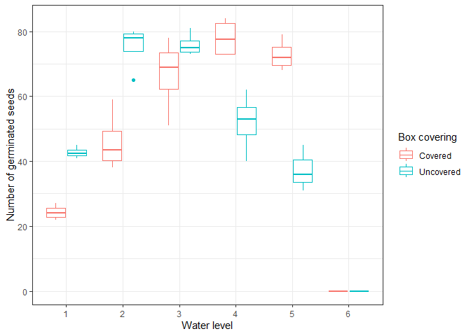

The goal of HSDS is to make all the datasets of the book “A Handbook of Small Data Sets” (1994) of David J. Hand available. These data sets are especially useful for demonstrating statistical methods, testing functions, or teaching statistics and R programming.
While the individual datasets are already available in a separate repository. they are not formatted for immediate use in R and lack documentation. This package addresses these issues by providing clean and fully documented datasets ready for analysis.
Do you like this package and want to support its development ? 
Installation
To install the development version of HSDS from GitHub, use the following command:
devtools::install_github("ABohynDOE/HSDS")Available data sets
The book contains over 500 datasets. Currently, only 16 datasets (3%) have been processed and included in this package.
The table below summarizes 10 randomly selected datasets included so far, with details on their names, descriptions, structures, and variable types.
| Name | Description | Structure | Variable types |
|---|---|---|---|
Example
Here’s a simple example demonstrating how to use one of the datasets to create a visualization:
library(hsds)
library(ggplot2)
ggplot(germin, aes(x = water, y = seeds, color = box)) +
geom_boxplot(na.rm = T) +
theme_bw()
Contributing to the package
We are far from reaching the goal of 500 datasets, so your contributions are more than welcome! If you’d like to help, all raw datasets are already available in the repository under data-raw/data-files. Feel free to clean one or more datasets and submit your contributions.
To simplify the contributing process, the package provides two helper functions:
data_list()
Use this function to list the datasets that have already been processed and identify the next datasets that need to be processed. This ensures efficient collaboration and avoids duplication of effort.-
data_setup(data)
This function sets up all the necessary files for processing a new dataset. When you rundata_setup(data), it generates three files, all nameddata.R, but placed in different locations:-
inst/examples/: Contains an example of usage for the dataset. -
data-raw/: Includes a script to process the raw dataset. -
R/: Documents the dataset for use in the package.
-
%%{
init: {
'theme': 'base',
'themeVariables': {
'primaryColor': '#009E73',
'primaryTextColor': '#000000',
'secondaryColor': '#56B4E9'
}
}
}%%
flowchart LR
A("data_setup(data)") -->|Example of Usage| B(inst/examples/data.R)
A -->|Processing Script| C(data-raw/data.R)
A -->|Documentation| D(R/data.R)When contributing, please also follow these guidelines:
Dataset Naming
Name each dataset based on the data structure index provided in the book. The index is available here or in the Excel filedata-raw/raw_data_index.xlsx.Variable Labelling
Ensure that all variables in the dataset are properly labelled. Labels don’t have to be long but should be meaningful to a newcomer. You can use thelabelledpackage or a similar tool to add these labels.Documentation
Document each dataset using the corresponding text from the book to maintain consistency and provide clear context.Examples of Usage
Add examples of how to use the datasets to your code. These examples should be saved as separate files in theinst/examplesdirectory.
Your contributions will help us expand this resource and make it even more valuable for the community. Thank you for your support!